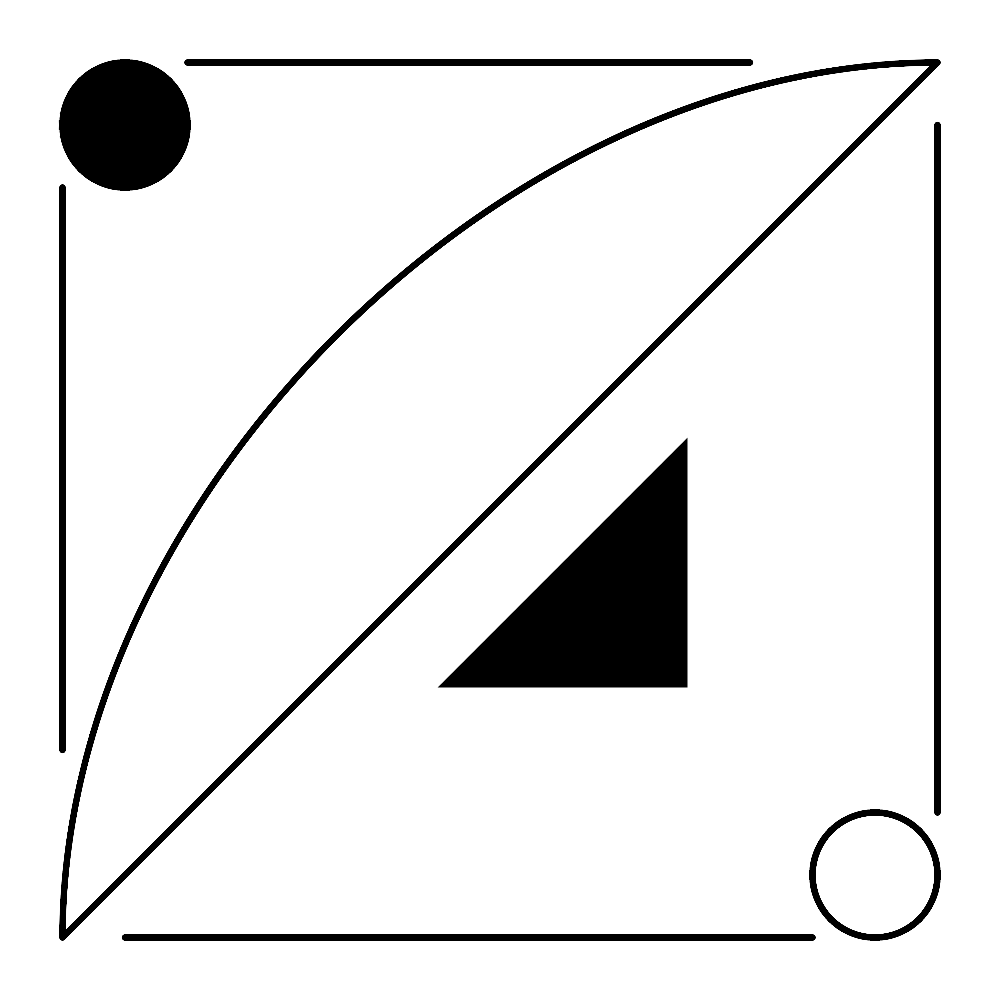
a.c')">Sending anything into space, and losing it, is very expensive. Here is a machine learning model that tells you if a plant is stressed in space, in time to act quickly to save it. It also determines which metrics best predict that stress, so we only send up a lightweight set of hardware that best detects that stress.
Work done for the Plant Processing Area (PPA) at NASA’s Kennedy Space Center (KSC)
How do you spot a failing crop early, with hardware light enough to fly?
Losing a crop growout in orbit is expensive, and so is every gram of sensor you fly to see it coming.
Dissect the machine learning model trained to detect stress to figure out which sensors to fly.
Train a model to spot a stressed plant from measurements of biomarkers, then read which biomarkers the model relied on most to classify a plant as stressed, and fly only the sensors that best detect those biomarkers.
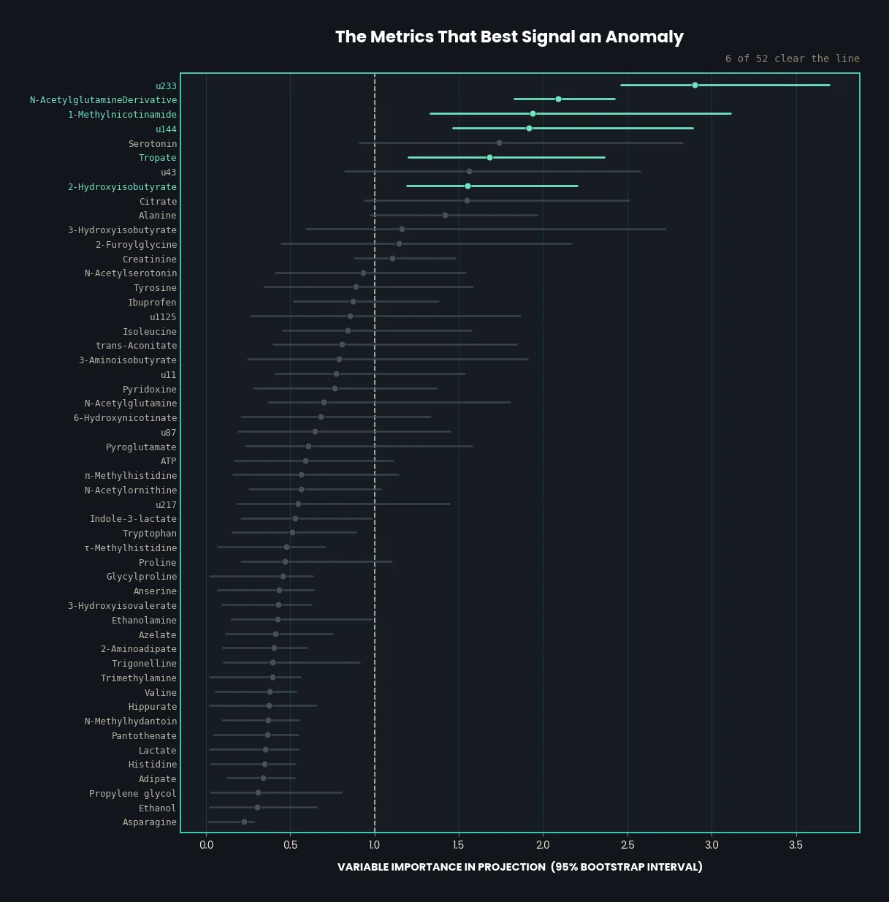
figure unavailable'">Adapt a machine learning model designed for cancer detection and direct it to detect plant stress.
The worked example below is a published cancer study. It works for space agriculture as well, because both problems need the same mathematical structure that the machine learning model implements to detect anomalies and explain the underlying biological mechanisms that produce those anomalies.
This work was applied in the Plant Processing Area at Kennedy Space Center. The worked example on this page is not that data, it is the openly published CIMCB tutorial.
Choosing the right tools to do the analysis
Four imports carry the whole workflow: numpy and pandas for the
arrays and tables, train_test_split from scikit-learn to hold data back from the
model, and cimcb_lite, which supplies the metabolomics-specific plots and the
Partial Least Squares Discriminant Analysis (PLS-DA) model wrapper.
import numpy as np import pandas as pd from sklearn.model_selection import train_test_split import cimcb_lite as cb print('All packages successfully loaded') All packages successfully loaded
Organising the data so every measurement can be judged on its own merits
The data are nuclear magnetic resonance (NMR) spectroscopy measurements of urine, stored in an
Excel workbook. That workbook must carry two sheets, one named Data and one
named Peak.
# The path to the input file (Excel spreadsheet) filename = 'GastricCancer_NMR.xlsx' # Load Peak and Data tables into two variables dataTable, peakTable = cb.utils.load_dataXL(filename, DataSheet='Data', PeakSheet='Peak') Data Table & Peak Table is suitable. TOTAL SAMPLES: 140 TOTAL PEAKS: 149
Each row represents a urine sample. The columns record the outcome for that sample (whether it is a quality-control (QC) sample, has gastric cancer, is a benign tumour, or is healthy), along with the measured concentration of every metabolite, the small molecules the body's chemistry produces. One hundred and forty rows: 43 gastric cancer, 40 benign, 40 healthy, and 17 pooled QC samples. A QC sample is the same pooled material measured again and again, so any change in its readings comes from the instrument, not the biology.
The peak sheet's rows describe the metabolites themselves, rather than the samples: their names, the percentage of samples for which a measurement is missing, and how much the readings of that metabolite vary across the repeated QC samples.
Dropping the measurements too unreliable to justify a sensor
We clean the peak sheet by imposing two conditions on every metabolite:
A metabolite that fails either test is not evidence, it is noise with a name, and it is dropped before it can influence anything downstream.
# Create a clean peak table rsd = peakTable['QC_RSD'] percMiss = peakTable['Perc_missing'] peakTableClean = peakTable[(rsd < 20) & (percMiss < 10)] print("Number of peaks remaining: {}".format(len(peakTableClean))) Number of peaks remaining: 52
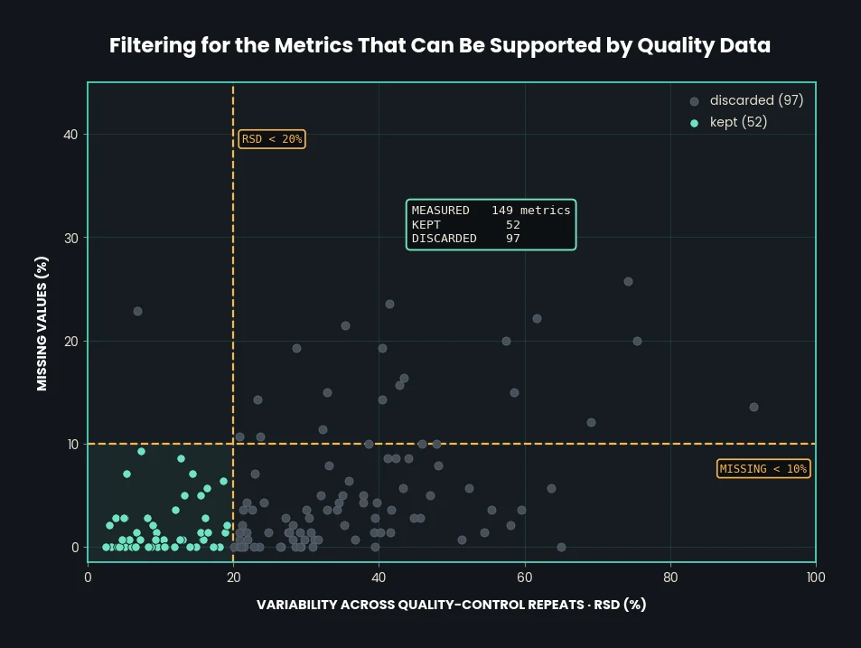
figure unavailable'">Preparing a data set worthy of training a machine learning model, and confirming the instrument can be trusted
We build the data matrix X by removing from the data sheet the metabolite
columns that failed the cleaning conditions. A series of transformations then puts every
measurement on a comparable footing, ready for PCA:
X: the data table with the rejected metabolite columns removed.Xlog: a logarithmic transformation of X, so a few very large
readings do not drown out the rest.Xscale: scaling applied to Xlog, so every metabolite counts
equally. The scaling method is a choice: auto by default, with
pareto, vast, level and range also
available.Xknn: Xscale is still missing readings for some samples, so
those gaps are filled in from the three most similar samples, a k-nearest-neighbour (kNN)
approach.# Extract and scale the metabolite data from the dataTable peaklist = peakTableClean['Name'] X = dataTable[peaklist].values Xlog = np.log10(X) Xscale = cb.utils.scale(Xlog, method='auto') Xknn = cb.utils.knnimpute(Xscale, k=3) print("Xknn: {} rows & {} columns".format(*Xknn.shape)) Xknn: 140 rows & 52 columns
PCA condenses the 52 measurements into a few summary directions called principal components (PCs). The first, PC1, captures the most variation between samples; PC2 captures the next most. Plotting every sample against PC1 and PC2 gives the score plot, and the first thing to look for in it is the QC samples.
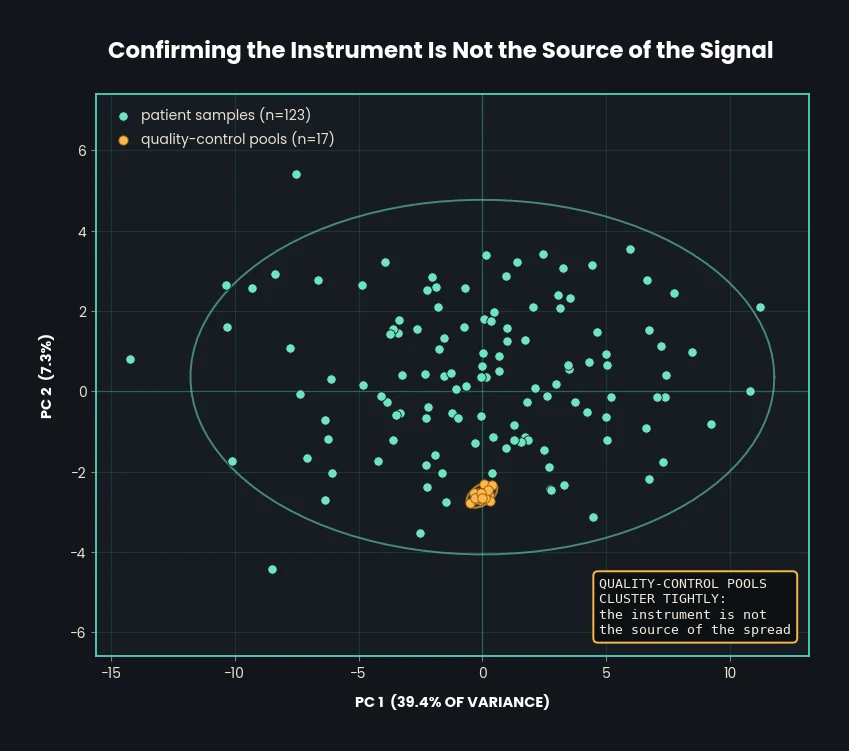
figure unavailable'">To explain the score plot we need PCA more generally. Each sample is described by the 52 metabolite concentrations that survived cleaning. Plotting a sample therefore means placing a point in a coordinate system with 52 axes. Having plotted every sample there, we would like a simpler two-dimensional picture for analysis.
That simpler picture is what PCA provides. Once the data sits in 52 dimensions we can calculate its PCs: directions that account for the variation in the data, ordered by how much each explains: PC1 the most, PC2 the second most, and so on.
Taking PC1 and PC2 out of the full 52-axis system gives a plane. Projecting every sample point onto that plane produces the score plot.
PC1 can be viewed as the X axis and PC2 as the Y axis of a plane inside the full 52-axis system. The loadings plot shows what those two new axes are made of. Each point is one of the measured metabolites: its position on the X axis shows how much weight it carries on PC1, and its position on the Y axis how much it carries on PC2. The further a point sits from the origin, the more that measurement drives the differences between samples.
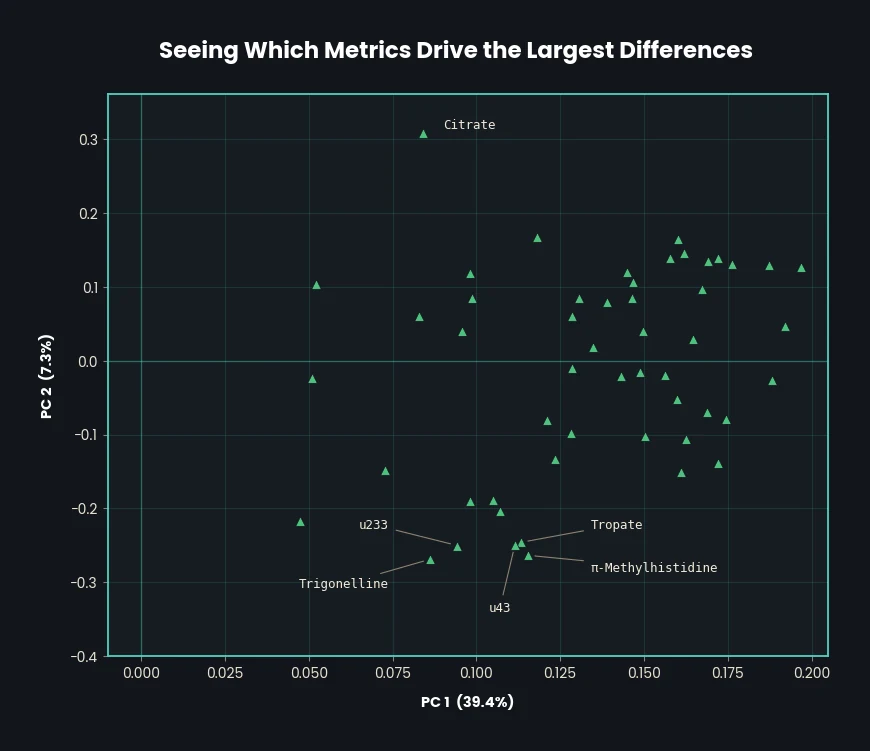
figure unavailable'">Checking whether any single measurement already does the job on its own
This section compares gastric cancer against healthy controls one metabolite at a time. It runs before the machine learning deliberately: if a difference is visible in a single measurement, that is worth knowing before a model gets the credit for finding it.
Eleven of the 52 separate the two groups on a t-test. After correcting for the fact that we ran 52 tests and some will look significant by luck alone, seven survive. That is the bar the model has to beat to be worth its complexity.
Training a model that learns instead of memorising, and proving it is not luck
PLS-DA looks for the few directions through the 52 measurements that best separate two groups: here cancer and healthy; on a crop tray, stressed and healthy.
Before creating a model we split the data set into a training set and a test set, to avoid overfitting. Overfitting is when a model learns one particular data set too closely: its predictions fit that data well and fall apart when it meets anything new.
We split so that three quarters makes up the training set and one quarter the test set. The makeup of each is determined by stratified random selection, which means both sets end up with the same proportion of healthy samples to samples with gastric cancer.
# Split dataTable2 and Y into train and test (with stratification) dataTrain, dataTest, Ytrain, Ytest = train_test_split( dataTable2, Y, test_size=0.25, stratify=Y, random_state=10) print("DataTrain = {} samples with {} positive cases.".format(len(Ytrain), sum(Ytrain))) print("DataTest = {} samples with {} positive cases.".format(len(Ytest), sum(Ytest))) DataTrain = 62 samples with 32 positive cases. DataTest = 21 samples with 11 positive cases.
Now we need the right number of components (the directions the model builds) to train with. Too few and the model misses the signal; too many and it memorises the training data. To find the balance, we run k-fold cross-validation.
First we take the entire training set and have the program predict a value for each sample in it. Those predictions are compared against the known values, and the coefficient of determination (R²) measures how closely they agree. We calculate R² for a range of component counts, up to six here.
Second, we split the training rows into k subsets of equal size, each called a fold. Then we calculate Q², the same measure computed on data held out from training: k−1 folds train the model and the remaining fold is the one predictions are recorded on. The folds rotate, so every fold is held out exactly once. Here k = 5, so four folds train and one is predicted on.
Rather than assert the answer, here is the dial. Each key refits the model with that many components and redraws what it predicts. The readout also reports the area under the curve (AUC): a score from 0.5, which is guessing, to 1, which is perfect, for how well the model ranks one group above the other. Section 6.3 shows where it comes from.
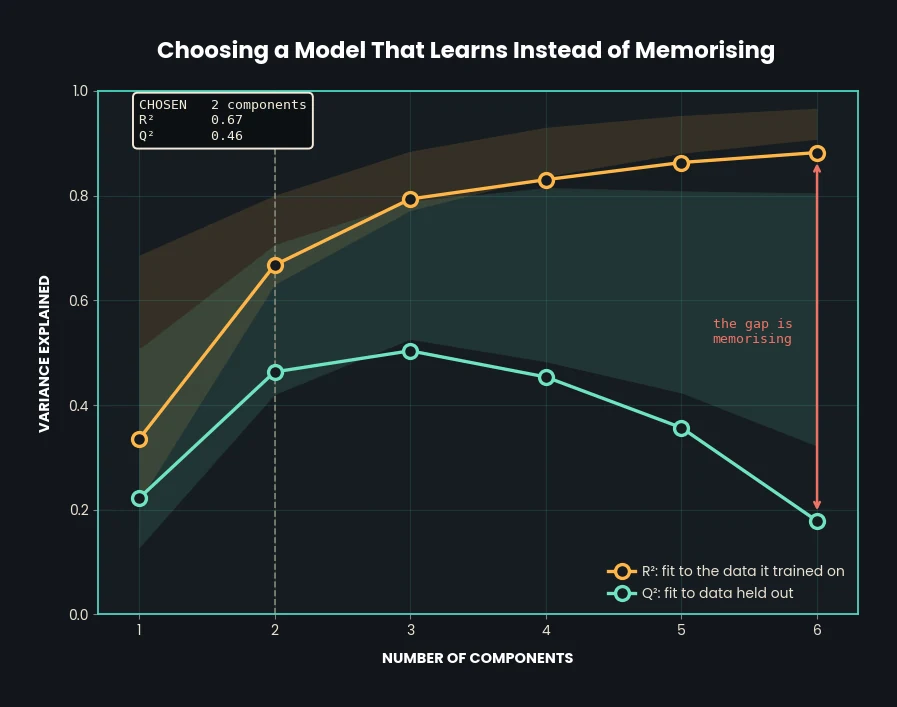
figure unavailable'">The program now trains the model on two components, which are called latent variables (LVs) once they are being used this way, and tests the accuracy of its predictions. The following visuals are how that performance is judged.
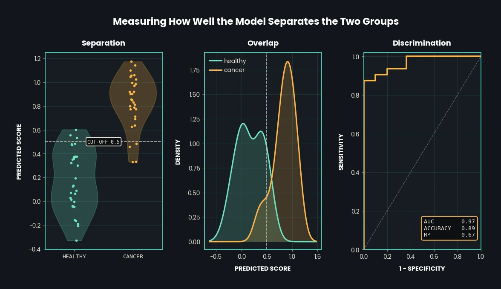
figure unavailable'">Class vs predicted score. The distribution of the model's predictions for the two possible outcomes, 0 for healthy and 1 for cancerous. The line at 0.5 is the cut-off: a score above it is called a 1, below it a 0. That cut-off is set in one line of code and can be changed: 0.75, for instance, if a false alarm is more expensive than a missed case.
Predicted score vs density. How the predictions are distributed. One curve is the scores the model gave samples that were actually healthy; the other, samples that were actually cancerous. Where the curves overlap is where the model is unsure.
1−specificity vs sensitivity. Sensitivity is the share of true cases the model catches; specificity is the share of healthy samples it correctly clears. The receiver operating characteristic (ROC) curve plots one against the other for every possible cut-off between 0 and 1, and the AUC is the area under that curve.
Now we attack the result. A permutation test shuffles which samples are labelled cancerous and which healthy, then builds, trains and tests a new model on the shuffled labels. The number of each label always matches the original; only which sample carries which label changes. If a model trained on nonsense labels scores as well as the real one, the real one learned nothing.
We run 100 shuffles and record R² and Q² for each. This test uses eight folds rather than five, so the real model's Q² reads slightly differently here than in 6.2.
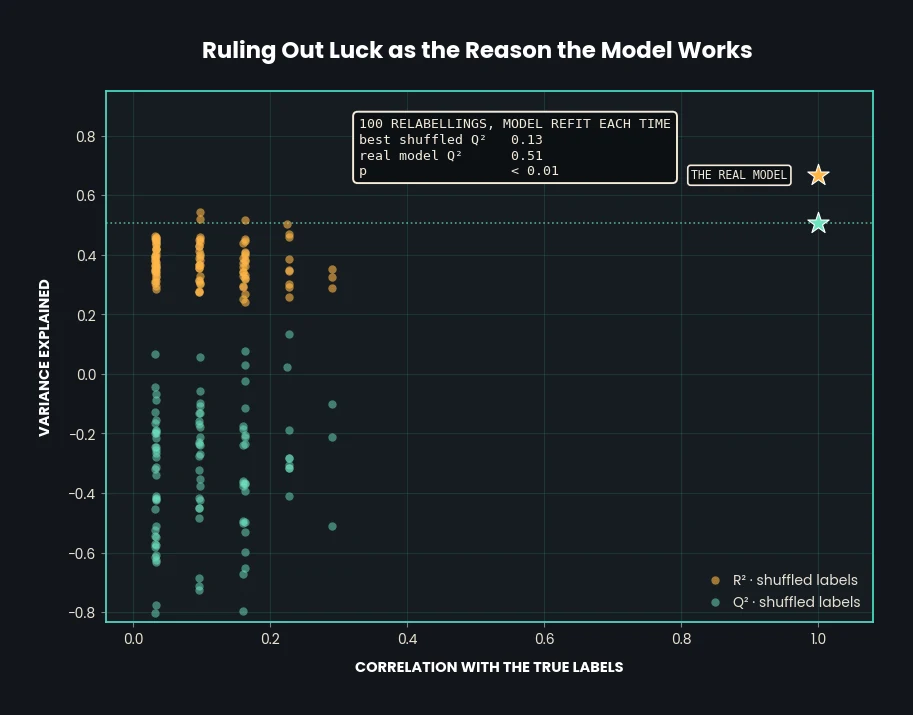
figure unavailable'">The real model should sit isolated, high and to the right, with the shuffled models clustered lower and to the left, where their labels are least like the real ones. That is what this graph shows. If shuffled models scored just as well, the measurements we trained on would not be meaningful for prediction in the first place.
These graphs show how the two LVs work together to tell cancerous and healthy samples apart. Suppose LV1 accounted for 50% of the variation in the data and LV2 also accounted for 50%. That would not mean they account for 100% together, because the variation each one explains can overlap. This is how that relationship becomes visible.
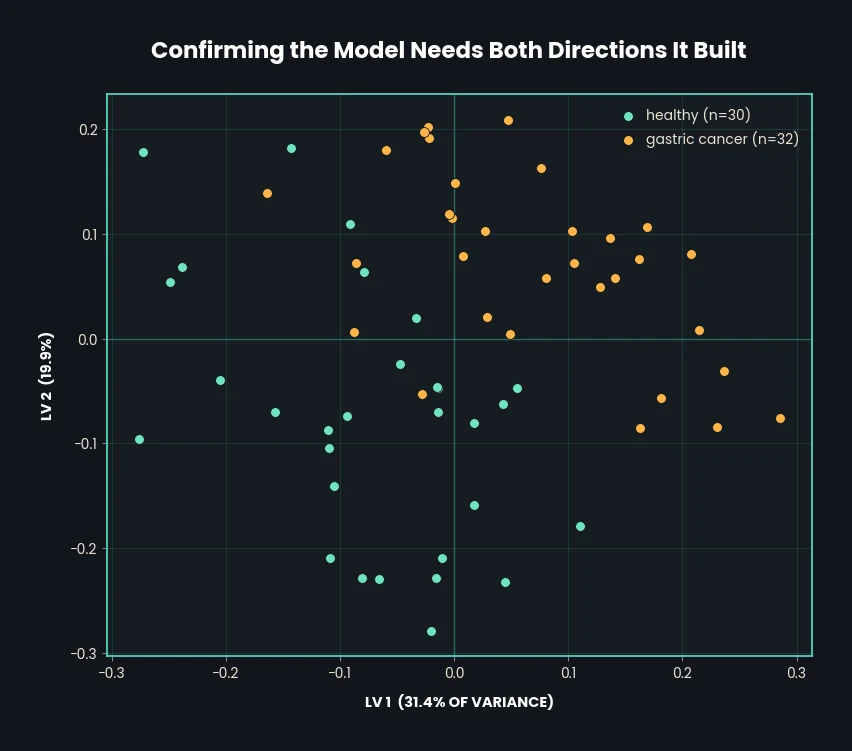
figure unavailable'">Naming the measurements worth flying a sensor for
Everything up to here established that the model is real. This is what it was for: the model is now asked which of the 52 measurements it actually leaned on, and how sure we can be of that answer. Two independent checks answer it: the regression coefficient, which says how strongly each measurement pushes the prediction, and the variable importance in projection (VIP) score, which says how much each one contributes to the directions the model built. Each comes with a 95% confidence interval from 200 bootstrap resamples.
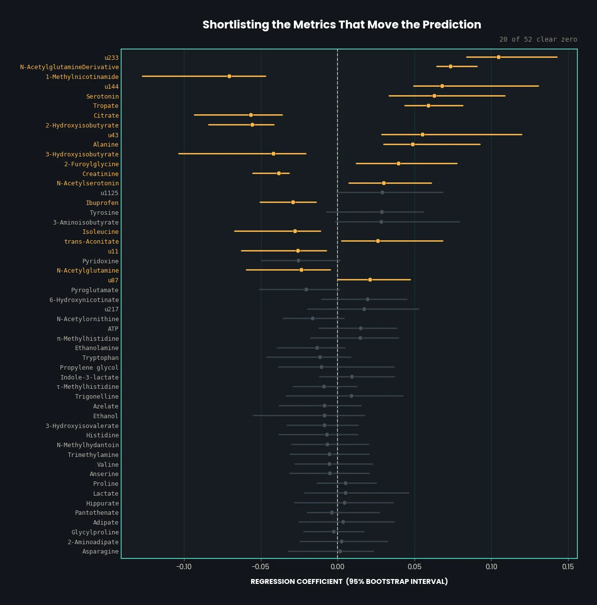
figure unavailable'">Proving the model holds up on samples it has never met
The model has not seen dataTest, which holds the measurements for the samples
kept back during training, and it has not seen Ytest, the 0 or 1 classification
for each of them. Testing on those samples returns the same visuals produced in 6.3, now
with the held-out results alongside. The table adds the F1 score, a single number that
balances how many true cases are caught against how many alarms are false.
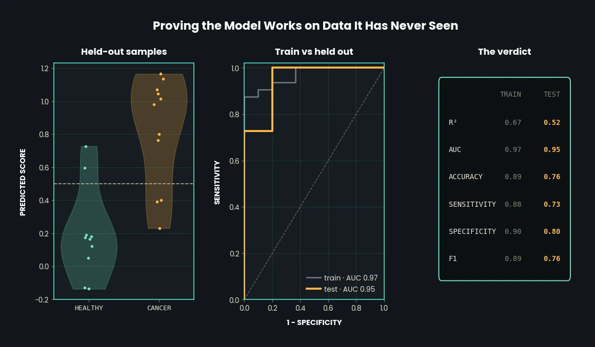
figure unavailable'">the pipeline is published; so is the reasoning behind it
Bring me the decision and the data behind it. I will tell you what matters, what you can cut, and how confident you can be before you commit.
Start a conversation